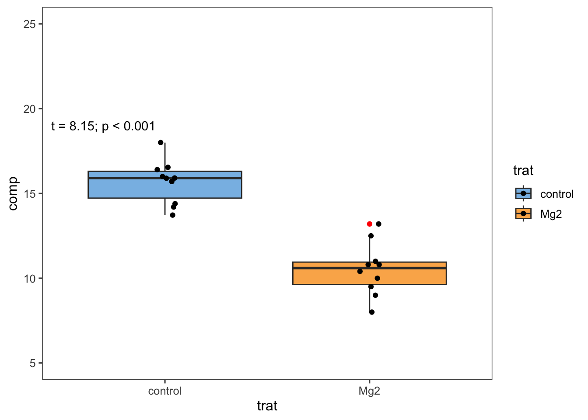

Codigo
# Cargar paquetes
library(tidyverse)
library(readxl)
library(report)
library(infer)
library(ggthemes)Una prueba de hipótesis es una técnica estadística cuyo objetivo es verificar si una muestra de datos es compatible con una hipótesis sobre la población de la que se extrajo la muestra. Compara dos hipótesis: la hipótesis nula (H0) y la hipótesis alternativa (H1).
El valor p es la probabilidad de observar un resultado tan extremo como el observado, asumiendo que la hipótesis nula sea verdadera. Un valor p pequeño indica que es poco probable que el resultado observado haya ocurrido por casualidad, sugiriendo que la hipótesis nula puede ser falsa.
Para comenzar, instalaremos y cargaremos los paquetes necesarios. Utilizaremos tidyverse para la manipulación de datos y visualización, y readxl para leer archivos Excel.
Usaremos datos del conjunto mg para crear un gráfico de caja (boxplot) y realizar análisis estadísticos.
# Leer datos del archivo Excel
mg <- read_excel("dados-diversos.xlsx")
# Crear un gráfico de caja con anotación
mg |>
ggplot(aes(trat, comp,fill = trat)) +
geom_boxplot(outlier.colour = "red") +
geom_jitter(width = 0.05) +
ylim(5, 25) +
theme_few()+
scale_fill_few()+
annotate(geom = "text", x = 0.7, y = 19, label = "t = 8.15; p < 0.001")
Vamos a crear un nuevo objeto mg2 y usar la función pivot_wider() para reestructurar los datos.
Usaremos la función t.test() para realizar una prueba t y luego el paquete report para generar un informe.
Effect sizes were labelled following Cohen's (1988) recommendations.
The Welch Two Sample t-test testing the difference between mg2$Mg2 and
mg2$control (mean of x = 10.52, mean of y = 15.68) suggests that the effect is
negative, statistically significant, and large (difference = -5.16, 95% CI
[-6.49, -3.83], t(17.35) = -8.15, p < .001; Cohen's d = -3.65, 95% CI [-5.12,
-2.14])Crearemos un gráfico para mostrar las medias y los errores estándar de la media para cada nivel de la variable trat.
inferEl paquete infer se utiliza para realizar inferencia estadística de manera compatible con tidyverse.
# Realizar una prueba t usando el paquete infer
mg3 <-mg |>
specify(comp ~ trat) |>
hypothesize(null = "independence") |>
generate(reps = 1000, type = "permute") |>
calculate(stat = "t", order = c("control", "Mg2"))
mg3 |>
DT::datatable(
extensions = 'Buttons',
options = list(dom = 'Bfrtip',
buttons = c('excel', "csv")))Esta guía básica te ayudará a realizar pruebas de hipótesis en RStudio utilizando los paquetes tidyverse, report, y infer. Desde la importación de datos hasta la generación de informes y visualización de resultados, cada paso está diseñado para ser fácil de seguir y entender.
# Prueba de Hipótesis
Una prueba de hipótesis es una técnica estadística cuyo objetivo es verificar si una muestra de datos es compatible con una hipótesis sobre la población de la que se extrajo la muestra. Compara dos hipótesis: la hipótesis nula (H0) y la hipótesis alternativa (H1).
## Definición de Hipótesis
- **Hipótesis Nula (H0)**: Es la hipótesis que se pone a prueba. Por ejemplo, si comparamos dos medias, podemos tener: H0: media1 = media2.
- **Hipótesis Alternativa (H1)**: Es la hipótesis que contraría H0. Por ejemplo: H1: media1 ≠ media2, H1: media1 < media2, o H1: media1 > media2.
## Valor p
El valor p es la probabilidad de observar un resultado tan extremo como el observado, asumiendo que la hipótesis nula sea verdadera. Un valor p pequeño indica que es poco probable que el resultado observado haya ocurrido por casualidad, sugiriendo que la hipótesis nula puede ser falsa.
### Instalación y Carga de Paquetes
Para comenzar, instalaremos y cargaremos los paquetes necesarios. Utilizaremos `tidyverse` para la manipulación de datos y visualización, y `readxl` para leer archivos Excel.
```{r}
# Cargar paquetes
library(tidyverse)
library(readxl)
library(report)
library(infer)
library(ggthemes)
```
### Exportación y Visualización de Datos
Usaremos datos del conjunto `mg` para crear un gráfico de caja (boxplot) y realizar análisis estadísticos.
```{r}
# Leer datos del archivo Excel
mg <- read_excel("dados-diversos.xlsx")
# Crear un gráfico de caja con anotación
mg |>
ggplot(aes(trat, comp,fill = trat)) +
geom_boxplot(outlier.colour = "red") +
geom_jitter(width = 0.05) +
ylim(5, 25) +
theme_few()+
scale_fill_few()+
annotate(geom = "text", x = 0.7, y = 19, label = "t = 8.15; p < 0.001")
```
### Ejemplo de Uso de la Prueba t
Vamos a crear un nuevo objeto `mg2` y usar la función `pivot_wider()` para reestructurar los datos.
```{r}
# Reestructurar los datos
mg2 <- mg |>
pivot_wider(names_from = trat, values_from = comp)
```
Usaremos la función `t.test()` para realizar una prueba t y luego el paquete `report` para generar un informe.
```{r}
# Realizar la prueba t
t <- t.test(mg2$Mg2, mg2$control)
# Generar un informe de los resultados
report(t)
```
### Visualización del Resultado
Crearemos un gráfico para mostrar las medias y los errores estándar de la media para cada nivel de la variable `trat`.
```{r}
mg |>
ggplot(aes(trat, comp)) +
geom_jitter(colour = "gray",position = position_jitter(height = 0, width = .1))+
stat_summary(fun.data = "mean_se",colour = "red")+
theme_few()
```
### Usando el Paquete `infer`
El paquete `infer` se utiliza para realizar inferencia estadística de manera compatible con `tidyverse`.
```{r}
# Realizar una prueba t usando el paquete infer
mg3 <-mg |>
specify(comp ~ trat) |>
hypothesize(null = "independence") |>
generate(reps = 1000, type = "permute") |>
calculate(stat = "t", order = c("control", "Mg2"))
mg3 |>
DT::datatable(
extensions = 'Buttons',
options = list(dom = 'Bfrtip',
buttons = c('excel', "csv")))
```
### Aprendizaje del día
Esta guía básica te ayudará a realizar pruebas de hipótesis en RStudio utilizando los paquetes `tidyverse`, `report`, y `infer`. Desde la importación de datos hasta la generación de informes y visualización de resultados, cada paso está diseñado para ser fácil de seguir y entender.